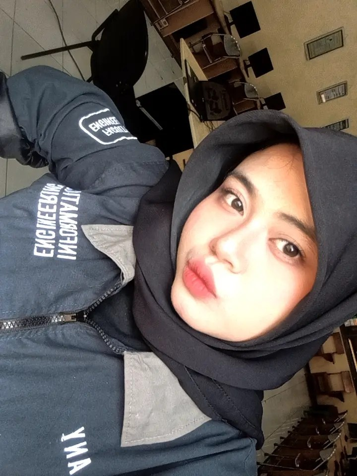

Halo, saya
Ani Rahmatika
Mahasiswa Teknik Informatika
Mahasiswa Teknik Informatika yang memiliki minat dalam pengembangan website, pemrograman, dan teknologi informasi. Saya senang mempelajari hal baru serta mengembangkan keterampilan melalui berbagai proyek.

Tentang Saya
Mengenal Saya Lebih Dekat
Halo, saya Ani!
Saya adalah mahasiswa semester 5 Program Studi Teknik Informatika di Universitas PGRI Ronggolawe Tuban. Saya memiliki ketertarikan pada bidang teknologi informasi, khususnya pengembangan website dan pemrograman.
Saya terus mengembangkan kemampuan melalui pembelajaran akademik, pengerjaan proyek, serta kegiatan organisasi. Saat ini, saya juga terbuka terhadap kesempatan magang dan pekerjaan untuk menambah pengalaman serta mengembangkan kemampuan profesional.
Pendidikan
Universitas PGRI Ronggolawe Tuban
S1 Teknik Informatika | 2024–Sekarang
SMKN 1 Tuban
Teknik Komputer dan Jaringan | Lulus 2024
Hard Skills
Soft Skills
Portfolio
Proyek yang Pernah Saya Kerjakan
Pengalaman
Pengalaman & Kegiatan
Pengalaman organisasi, pekerjaan, kepanitiaan, dan kegiatan sosial yang pernah saya ikuti.HIMA Teknik Informatika – UNIROW
Anggota Departemen Advokasi
2024–2026
- Berpartisipasi dalam kegiatan dan program kerja Departemen Advokasi.
- Membantu menyampaikan dan menampung aspirasi mahasiswa.
- Terlibat dalam koordinasi dan pelaksanaan kegiatan departemen.
- Berpartisipasi dalam kegiatan advokasi dan orasi mahasiswa.
BEM UNIROW
Staf Muda Kementerian Pendidikan dan Kebudayaan
2025
- Berpartisipasi dalam kegiatan dan program kerja organisasi.
- Membantu pelaksanaan kegiatan internal maupun eksternal.
- Bekerja sama dengan anggota tim dalam menjalankan program organisasi.
- Mengembangkan kemampuan komunikasi dan koordinasi.
Kantor Kementerian Agama Kabupaten Tuban
Praktik Kerja Lapangan (PKL)
- Membantu pekerjaan administrasi dan pengarsipan dokumen.
- Melakukan pengelolaan dan penyusunan dokumen.
- Membantu pelayanan kepada masyarakat.
- Berinteraksi secara langsung dengan lingkungan kerja dan pelayanan publik.
Moderator – Webinar Pertamina Sobat Bumi
HIMATIF UNIROW
- Membuka dan memandu jalannya acara.
- Mengatur alur kegiatan dan sesi diskusi.
- Berkomunikasi dengan narasumber dan peserta.
Moderator – IMBIE
HIMATIF UNIROW
- Memandu jalannya acara.
- Menjaga alur kegiatan.
- Berinteraksi dengan peserta dan pihak yang terlibat.
Pemateri – Sosialisasi HIMATIF GOOSCH
Go To School
- Menyampaikan materi kepada siswa.
- Berinteraksi dan berkomunikasi dengan peserta.
- Menciptakan suasana penyampaian materi yang interaktif.
MARINCARE
Bersih Pantai dan Penanaman Pohon
Pantai Klero, Palang, Tuban
- Berpartisipasi dalam kegiatan bersih pantai.
- Melakukan penanaman pohon.
- Mendukung kegiatan pelestarian lingkungan.
GOOSCH – Go To School
Kegiatan edukasi di beberapa sekolah
- SDN Bektiharjo 2.
- MI Al-Hidayah Kasiman Kerek.
- MI Salafiyah Padasan.
- SDN Padasan.
- MA Entrepreneur Manba'ul Huda.
- Berinteraksi dengan siswa dan menyampaikan materi edukasi.
Pengabdian Masyarakat – Maindu, Montong
4 Hari
- Mengajar di sekolah-sekolah.
- Membantu kegiatan pembelajaran siswa.
- Berpartisipasi dalam workshop ibu-ibu PKK.
- Berpartisipasi dalam workshop Karang Taruna.
- Melakukan interaksi dan kegiatan sosial bersama masyarakat.
Kontak
Hubungi Saya
Jika tertarik untuk bekerja sama atau ingin menghubungi saya, silakan kirim pesan melalui formulir berikut.